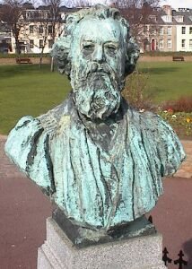

Y'a bein des choses à un chôsyi, et bein des roses à un rôsyi. Véthe, et nou peut tréjous apprendre dé tchi entouor les flieurs. La Pâraisse èrprend part dans la Batâle dé Flieurs ch't' année, v'là tch'est à propos pouor une pâraisse flieuthie d'même atout ses pars, ses gardîns et ses pann'lées d'flieurs.
Mais les flieurs sont sŷmboliques étout. Ou connaîssez sans doute la tchaîse du Connêtabl'ye dans la Salle d'Assembliée, la cheinne dans tchi qu'i' s'assied quand i' préside les Assembliées d'Pâraisse. Mais av'-ous janmais r'gardé chutte tchaîse-là d'près? Av'-ous r'mèrtchi les roses stchulptées dans l'bouais du dos? Assa, i' s'adonne qué not' Connêtabl'ye n'est pon tréjous sus des roses - mais quand il est jutchi sus sa tchaîse, i' pouôrrait dithe qué tout est couleu d'rose.
Ch'est en tchi la rose est un vièr sŷmbole politique en Jèrri. Au dgiêx-neuvième siècl'ye, y'avait deux partis ès êlections: lé parti d'la Rose et l'parti du Louothi. Les Rôsièrs 'taient pouor la r'forme et l'progrès, et les Louothièrs 'tait pouor consèrver la constitution et garder les traditions. Pièrre Lé Sueux 'tait un Rôsyi et un grand r'formateu coumme Connêtabl'ye, et né v'là pouortchi j'avons des roses sus la tchaîse du Connêtabl'ye, tchi 'tait à li.
Y'avait dans châque camp d's êlecteurs convaintchus, mais y'avait étout les cheins tchi pouôrraient voter sait pouor un Rôsyi sait pouor un Louothi s'lon l'caractéthe du candidat, épis y'avait étout les Vieaux - les cheins tchi vot'taient pouor l'chein tchi paiethait. À chu temps-là, l's êlections 'taient publyiques, ch'est en tchi nou votait ouvèrtément. Et viyant qu'les grôsses têtes des partis savaient tchi qui votait pouor tchi, y'avait la pôssibilité d'acater des vouaix, car nou saithait à la siette dé tchi bord qu'un êlecteur avait voté.

Ch'fut l'Connêtabl'ye Ph'lippe Baudains tchi proposit la louai sus l'Scrutîn à seule fîn qu'lé ballot fûsse en s'gret. Nou-s'objectit tout coumme qu'i' y'avait bein des pouôrres êlecteurs tchi dêpendaient d'la vendue d'lus vouaix ès riches candidats car, pouor ieux, la vie n'tait pon tout roses. Mais la R'forme triomphit, et l'Connêtabl'ye Baudains avait bein méthité sa stchulptuthe dans les Gardîns d'la Pathade - parmi les flieurs.
Geraint Jennings
Viyiz étout: